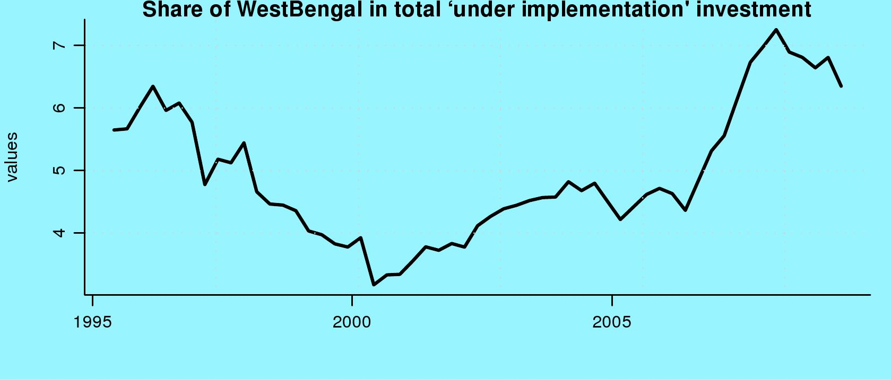
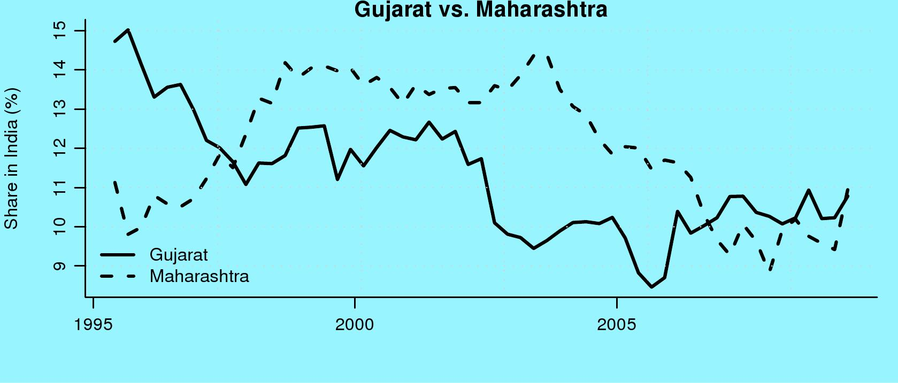
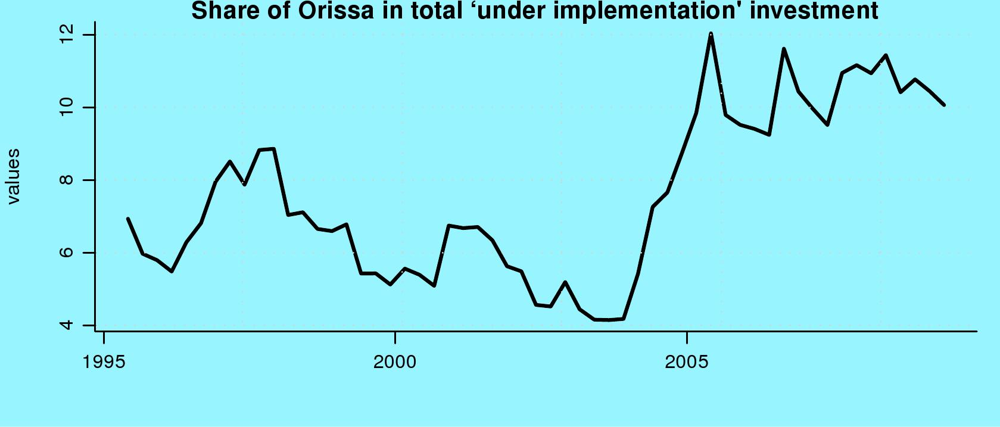
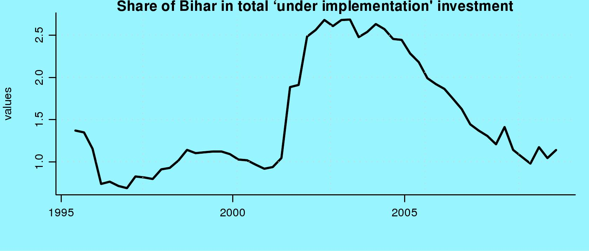
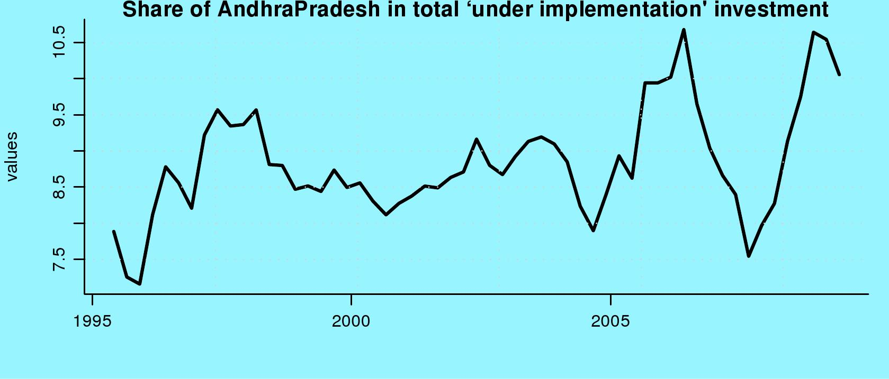

Investment trends at the state level
Indian Express, 7 July 2009
CMIE maintains a database of all investment projects under implementation in India. This is micro data (http://tinyurl.com/CMIECapex) where the information for every individual investment project is transparently visible. This infuses the database with greater trustworthiness. Every quarter, CMIE adds up the value of all projects under implementation in each state. The share of states in this data, observed from 1995 onwards with the latest reading pertaining to April/May/June 2009, yields valuable insights.
 Figure 1 shows that investment into West Bengal was on a long-term decline. From a value like 6.5% of the country's total investment, this had declined to well below 4% in 2000/2001. This helped induce a change in the stance of the CPI(M) towards trade unions, which yielded modest improvements. When the UPA-I came to power, with veto power in the hands of the CPI(M), West Bengal benefited handsomely, with the share in investment rising from a bit above 4% all the way to 7% of total investment. The exit of the CPI(M) from UPA-I and the problems of projects such as Tata Motors has since dented investment into West Bengal, which has dropped by over one percentage point.
Gujarat and Maharashtra used to have a major role in India's investment. In 1995, Gujarat was at 15% of India's investment and in 1998, Maharashtra was at 14%. Both states have experienced difficulties. The riots of 2002 led to a sustained chill in investment to Gujarat, which dropped from a plateau of 12% to a low of below 9%. In the following quarters, investment has come back to over 10% of the Indian total, but is still below the pre-2002 situation. This tells us the importance of keeping the peace: a state which experiences a breakdown of law and order like Gujarat has is likely to get a sustained decline in investment for many years and will have to undertake herculean efforts to get investment back in.
Investment in Maharashtra has been on a slow decline for a long time reflecting the poor quality of governance in the state. From the region of 14% of India's investment, Maharashtra has dropped to the region of 9% to 10%, with a slight improvement in the latest quarter.
A major winner in investment in recent years has been Orissa. Shortly before 2005, there was a quantum leap in investment into Orissa, which went from 4% of the total to roughly 10% of the total. Perhaps this is one element of Naveen Patnaik's ability to get voted back to power.
In the case of Bihar, there has been a long slow decline, albeit from a poor starting point of 2.5% of total investment. Nitish Kumar is widely seen as having averted the worst excesses of the breakdown of law and order in Bihar. But as yet, this has not yielded results in terms of improvement in the investment climate and a resurgence of investment.
Andhra Pradesh is a state where there has been considerable volatility in investment. It has fluctuated between 7.5% to 10.5% of the projects under implementation in India within short periods of time. In recent months, confidence in Andhra Pradesh as an investment destination has been dented by the problems in Satyam/Maytas, and the attempt by the State government to imprison Nimesh Kampani. This may be at work in the declines seen in the two most-recent quarters.
Back up to Ila Patnaik's media page
Back up to Ila Patnaik's home page